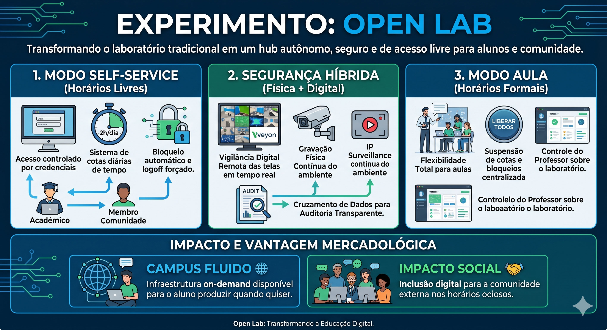

Transformando a infraestrutura tecnológica do IFCE Campus Baturité em um ecossistema autônomo, seguro e de acesso contínuo.
Transformar o laboratório de informática do IFCE Campus Baturité em um ecossistema autônomo e seguro. O projeto visa maximizar o uso da infraestrutura a Comunidade Interna e para a Comunidade Externa, operando em regime self-service nos horários vagos, sem perder a flexibilidade necessária para as aulas formais.
A infraestrutura será baseada em soluções freeware e de código aberto, dividida em:
Execução de um experimento piloto de 15 dias em ambiente restrito para validação técnica do sistema de cotas, testes de monitoramento e coleta de métricas de uso institucional.

* Simulação simplificada dos estados de transição entre o regime Self-Service e o Modo Aula.
Otimização para horários vagos. O laboratório funciona de forma autônoma e justa para todos.
Auditoria completa cruzando dados digitais e espaço físico em tempo real.
Flexibilidade e controle absoluto nos momentos de ensino formal das disciplinas.
Este experimento vai além da logística. Para o curso de Informática PARA Internet EaD, implementamos o conceito de "Campus Fluido". Não oferecemos apenas o horário de aula engessado, mas sim um Hub Tecnológico disponível sob demanda.
Nos horários ociosos, o modelo "Open Lab" permite abrirmos nossas portas para o atendimento e inclusão digital da comunidade externa, fortalecendo a extensão institucional do campus.